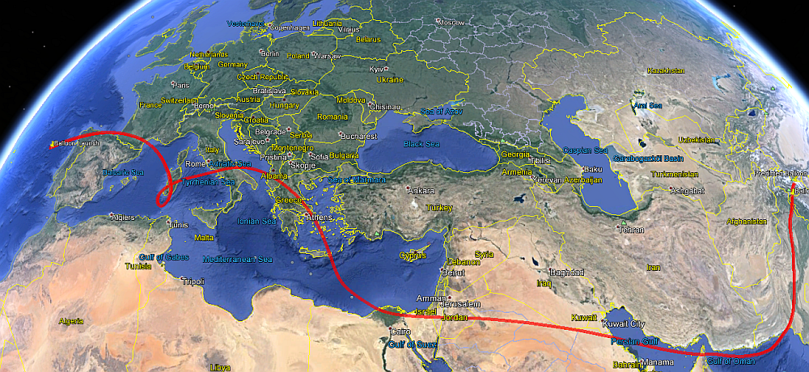
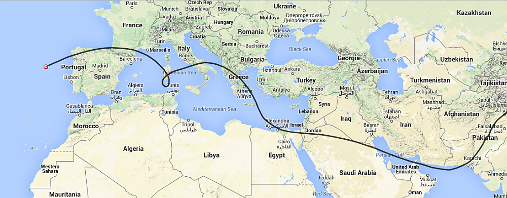

All, CNSP-24 was launched Sunday 4/12/2015 and has now traveled completely around the planet and is on orbit number 2. It is currently traveling 90 mph @ 43,000’ and I expect it will slow down as it travels across France and goes into the Mediterranean sea. Here is the link to follow its real time progress. http://aprs.fi/#!call=a%2FK6RPT-11&timerange=604800&tail=604800 My current path prediction is:   I will update this prediction as it get closer to the Middle East. Don |